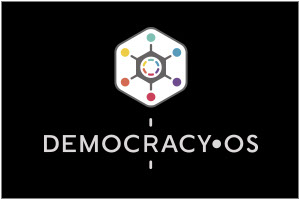

DemocracyOS es una herramienta de código abierto pensada para facilitar la participación ciudadana en procesos de toma de decisión. Es la manifestación tecnológica de nuestra misión principal: acercar el sistema político a las tecnologías y hábitos de este siglo.